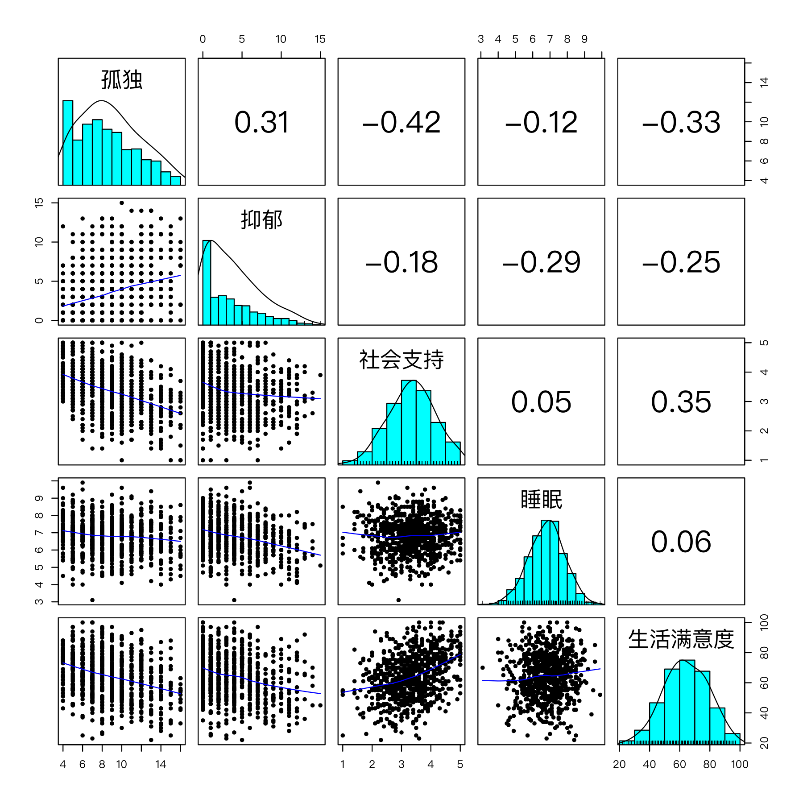

用 R 做描述统计、相关与回归
本课学习目标
- 用 psych::describe() 得到描述统计
- 用 cor() 计算相关矩阵并处理缺失值
- 用 lm() 和 glm() 做回归并读懂 summary() 输出
核心概念
- 描述统计descriptive statistics
- 模型摘要model summary
- 成对删除pairwise deletion
本课结构：直觉 → 最少数学 → R 代码 → 理解检查 → 练习 → 小结。文中的交互图示可拖动或点击；测验答错会先给提示，答错两次可查看解析。
① 直觉把模块 1、2 的概念“翻译”成 R 输出
模块 1 里你手算过平均数、标准差、相关系数，理解了标准误、置信区间和 p 值；回归和逻辑回归要到模块 3 才系统讲，这里先认识 R 的回归输出长什么样。本课不学新的统计概念，而是学会在 R 里一次得到这些数字，并读懂 R 打印出来的那一大串输出。拿到一份新数据，社会工作研究者的第一步几乎总是：描述统计 → 相关矩阵 → 回归。
描述统计：先认识你的数据
描述统计（descriptive statistics）回答“数据长什么样”：多少人（n）、平均水平（mean）、离散程度（sd）、范围（min、max）、分布形状（skew 偏度、kurtosis 峰度）。基础 R 的 summary() 给出最小值、四分位数、中位数、均值、最大值；psych 包的 describe() 给出更适合心理测量的一整套指标。
skew（偏度）告诉你分布是否对称（1.2 课）：0 附近表示大致对称；正值表示右偏（大多数人分数低，少数人分数很高，“尾巴”拖在右边）；负值表示左偏。课程数据中抑郁总分的 skew = 0.85，是明显的右偏：社区样本中大多数人抑郁症状很少，少数人很多。这在社区样本中很常见，也说明抑郁题目的分布不是正态的，第 6 模块选择相关类型时会再考虑这一点。常见的粗略经验是 |skew| > 1 视为明显偏态、> 2 视为严重偏态，但不同教材的界值不同。
相关矩阵：所有变量两两之间的关系
当有 5 个变量时，有 5 × 4 / 2 = 10 对相关。cor(d) 一次算出整个相关矩阵：对角线是 1（变量与自己的相关），上下三角对称。psych::corr.test() 还同时给出每个相关的 p 值。
仔细看本课输出的 p 值矩阵：“睡眠–孤独”在下三角是 0.0009，在上三角是 0.0026。这不是错误。corr.test() 的帮助文档说明：对角线以下是未校正的 p 值，对角线以上是经过多重比较校正（默认 Holm 法）的 p 值。这对应 1.6 课的多重检验问题：同时检验 10 个相关，需要校正。报告时要说明你用的是哪一种。
缺失值：成对删除 vs 列表删除
课程数据没有缺失，但真实数据几乎都有。如果某列有 NA，cor(x, y) 直接返回 NA（2.2 课：NA 会传染）。参数 use 决定如何处理：
use = "complete.obs"（列表删除，listwise）：只用所有变量都没有缺失的人。每对相关基于同一批人，但可能丢掉很多数据。use = "pairwise.complete.obs"（成对删除（pairwise deletion））：每一对变量分别使用在这两个变量上都有数据的人。用到的数据更多，但不同相关可能基于不同的人、不同的 n。
两种方法都隐含“缺失是随机的”假设；缺失较多或不随机时，需要 4.3 课讲的多重插补或 FIML。lm() 默认使用列表删除：凡是模型中任一变量缺失的人都被排除，summary() 会提示 “(3 observations deleted due to missingness)”。
回归输出：每一列对应模块 1 的哪个概念？
模型摘要（model summary） summary(lm(...)) 是本课最重要的输出。下面把它“拆开”，点击带下划线的部分看解释：
Call: lm(formula = 抑郁 ~ 孤独 + 社会支持, data = d) Residuals: Min 1Q Median 3Q Max -6.6787 -2.4059 -0.7062 1.9736 10.9074 Coefficients: Estimate Std. Error t value Pr(>|t|) (Intercept) 1.80159 0.76637 2.351 0.019 * 孤独 0.31927 0.04081 7.824 1.62e-14 *** 社会支持 -0.23121 0.15895 -1.455 0.146 --- Signif. codes: 0 ‘***’ 0.001 ‘**’ 0.01 ‘*’ 0.05 ‘.’ 0.1 ‘ ’ 1 Residual standard error: 3.228 on 797 degrees of freedom Multiple R-squared: 0.09979, Adjusted R-squared: 0.09754 F-statistic: 44.18 on 2 and 797 DF, p-value: < 2.2e-16
| 输出 | 概念 | 在哪一课学过 |
|---|---|---|
| Estimate | 回归系数 b（点估计） | 3.1、3.2 |
| Std. Error | 标准误：抽样分布的标准差 | 1.5 |
| t value | 检验统计量 = 估计 ÷ 标准误 | 1.6 |
| Pr(>|t|) | p 值（原假设：系数 = 0） | 1.6 |
| Estimate ± 约 2 × SE | 95% 置信区间（用 confint() 得到精确值） | 1.5 |
| R² | 解释的方差比例 | 3.1 |
glm() 的 summary() 结构几乎一样，只是 t 换成 z，R² 换成 deviance 和 AIC（3.4 课）。
“只解释了 10%”听起来很少，但心理社会结果受很多因素影响，单个心理变量解释 10% 左右的方差在这一领域并不罕见。R² 低不意味着孤独感不重要；系数显著也不意味着效应很大。描述效应大小时，最好同时报告系数、置信区间，并结合实际意义（例如“孤独感高 3 分（约 1 个标准差），抑郁平均高约 1 分”）。
② 最少数学输出中的几个关系
- \(b\)
- Estimate 列。
- \(SE(b)\)
- Std. Error 列。
- \(df\)
- 残差自由度 = \(n - p - 1\)，这里 800 − 2 − 1 = 797。
- \(t_{0.975,\,df}\)
- t 分布的 97.5% 分位数，df = 797 时约 1.963（R：
qt(0.975, 797)）。
例：孤独 \(0.31927 / 0.04081 \approx 7.82\)；95% CI ≈ \(0.319 \pm 1.963\times0.0408 = [0.239, 0.399]\)。
\(n = 800\)，\(p = 2\)：\(1 - 0.90021\times 799/797 \approx 0.0975\)，与输出一致。
③ R 代码描述 → 相关 → 回归
对应脚本：R/L2-5.R。数据框的列名可以用中文（输出更易读），但要确保脚本以 UTF-8 保存（2.4 课）。
source("R/_setup.R")
dat <- read_course_data()
d <- data.frame(孤独 = rowSums(dat[, paste0(lone_items, "_t1")]),
抑郁 = rowSums(dat[, paste0(dep_items, "_t1")]),
社会支持 = dat$social_support_t1, 睡眠 = dat$sleep_hours_t1,
生活满意度 = dat$life_sat_t1)
round(psych::describe(d)[, c("n", "mean", "sd", "min", "max", "skew")], 2)
ct <- psych::corr.test(d) # 相关矩阵 + p 值
round(ct$r, 2); round(ct$p, 4)
fit <- lm(抑郁 ~ 孤独 + 社会支持, data = d)
summary(fit)
psych::pairs.panels(d, ellipses = FALSE) # 散点图矩阵 n mean sd min max skew
孤独 800 8.80 3.08 4.0 16.0 0.36
抑郁 800 3.84 3.40 0.0 15.0 0.85
社会支持 800 3.36 0.79 1.0 5.0 -0.14
睡眠 800 6.81 1.02 3.1 9.9 -0.12
生活满意度 800 64.32 14.81 22.0 100.0 -0.09
孤独 抑郁 社会支持 睡眠 生活满意度
孤独 1.00 0.31 -0.42 -0.12 -0.33
抑郁 0.31 1.00 -0.18 -0.29 -0.25
社会支持 -0.42 -0.18 1.00 0.05 0.35
睡眠 -0.12 -0.29 0.05 1.00 0.06
生活满意度 -0.33 -0.25 0.35 0.06 1.00
孤独 抑郁 社会支持 睡眠 生活满意度
孤独 0e+00 0 0.0000 0.0026 0.0000
抑郁 0e+00 0 0.0000 0.0000 0.0000
社会支持 0e+00 0 0.0000 0.1667 0.0000
睡眠 9e-04 0 0.1667 0.0000 0.1627
生活满意度 0e+00 0 0.0000 0.0814 0.0000读 p 值矩阵：下三角未校正、上三角 Holm 校正。例如“睡眠–生活满意度”r = 0.06，未校正 p = .081，校正后 p = .163；“社会支持–睡眠”r = 0.05，p = .167（这一对恰好在两种方法下相同）。0e+00 是科学计数法的 0，表示 p 小于 0.00005（四舍五入后为 0），报告为 p < .001。

psych::pairs.panels()。对角线是每个变量的直方图和密度曲线（可以看到抑郁明显右偏），下三角是散点图和拟合曲线，上三角是相关系数。round(confint(fit), 3) # 95% 置信区间（保留 3 位小数）
d_na <- d
d_na$孤独[c(3, 10, 25)] <- NA # 人为制造 3 个缺失
cor(d_na$孤独, d_na$社会支持) # NA 传染
cor(d_na$孤独, d_na$社会支持, use = "pairwise.complete.obs")
nobs(lm(抑郁 ~ 孤独, data = d_na)) # lm 默认删除缺失个案：800 − 3 2.5 % 97.5 %
(Intercept) 0.297 3.306
孤独 0.239 0.399
社会支持 -0.543 0.081
[1] NA
[1] -0.416814
[1] 797社会支持的 95% CI [−0.543, 0.081] 包含 0，与 p = .146 一致。
dat$dep_sum_t2 <- rowSums(dat[, paste0(dep_items, "_t2")])
fit_glm <- glm(help_seek_t2 ~ dep_sum_t2 + gender, data = dat, family = binomial)
summary(fit_glm)$coefficients # 只看系数表：Estimate、Std. Error、z value、Pr(>|z|)
exp(coef(fit_glm)) # OR完整例题：逐行读懂 summary(fit)，再写成一句话
Coefficients:
Estimate Std. Error t value Pr(>|t|)
(Intercept) 1.80159 0.76637 2.351 0.019 *
孤独 0.31927 0.04081 7.824 1.62e-14 ***
社会支持 -0.23121 0.15895 -1.455 0.146
Residual standard error: 3.228 on 797 degrees of freedom
Multiple R-squared: 0.09979, Adjusted R-squared: 0.09754 t 值、置信区间和 R² 的读法见上面的注释输出和“最少数学”。这里补三点：
- Estimate（b）的说法：要带上“控制了谁”。在社会支持相同的人中，孤独总分每高 1 分，抑郁总分平均高 0.319 分；在孤独相同的人中，社会支持每高 1 分，抑郁平均低 0.231 分。
- Pr(>|t|)：
1.62e-14是科学计数法，等于 1.62 × 10⁻¹⁴，报告时写 p < .001。 - Residual standard error = 3.228：用这个模型预测抑郁，典型误差约 3.2 分。抑郁总分本身的 SD 是 3.40，说明个体层面的预测仍然很粗。
一句话报告：“控制社会支持后，孤独正向预测抑郁（b = 0.32，95% CI [0.24, 0.40]，p < .001）；控制孤独后，社会支持的作用不显著（b = −0.23，95% CI [−0.54, 0.08]，p = .146）。模型解释了抑郁 10.0% 的变异。”
为什么社会支持“不显著”了？
相关矩阵中，社会支持与抑郁 r = −0.18，p < .001，明明是显著的。放进回归后却不显著，原因在于社会支持与孤独中等偏强地相关（r = −0.42）：社会支持与抑郁的关联，大部分可以通过“社会支持高的人更不孤独”来解释。控制孤独后，社会支持剩下的独特贡献就很小了。这不是矛盾：相关回答“有没有关联”，回归系数回答“控制其他变量后还剩多少独特关联”（3.2 课）。偏相关网络（6.2 课）的每条边也是后一种意义上的关联。
- 只报星号。
***只是 p 值区间的速记，不能代替具体数值。至少报告 b（或 β）、95% CI 和 p。
描述统计表应该怎么读？
拿到 describe() 的输出，按这个顺序检查：①n：是否每个变量都是 800？如果某个变量更少，说明有缺失，后面的分析人数会变。②min / max：是否在量表的理论范围内？孤独总分 4–16、抑郁总分 0–15，都没有越界。③mean 与 sd：抑郁均值 3.84，相对于满分 15 偏低，样本整体抑郁程度不高。④skew：见上文；孤独 0.36，较为对称。
从相关矩阵预判后面的网络
相关矩阵已经透露了网络的大致模样：孤独与社会支持 r = −0.42，是这张表里最强的关联；抑郁与睡眠 r = −0.29，与生活满意度 r = −0.25；睡眠与社会支持 r = 0.05，几乎无关。在偏相关网络（6.2 课）中，有些相关会因为控制了其他变量而缩小甚至消失，例如上面讲到的社会支持与抑郁。学到 6.2 课时，可以把这张相关矩阵和估计出的网络放在一起比较，看哪些关联在控制其他变量后保留了下来。
小练习：读懂一个新系数
假设把睡眠时长加入模型，得到“睡眠 b = −0.80，95% CI [−1.01, −0.59]”。试着写出解读：在孤独和社会支持相同的人中，每天多睡 1 小时，抑郁总分平均低约 0.8 分；区间不包含 0，所以在 .05 水平上显著。再想一想，为什么不能写成“多睡 1 小时可以让抑郁降低 0.8 分”？（提示：这是横断面数据。）注意：这里的数字只是为了练习而设的假设值，不是课程数据的结果。
④ 理解检查即时测验
cor() 的 use = "pairwise.complete.obs" 是什么意思？
- 那是 complete.obs（列表删除）。
- 正确：成对删除。
- pairwise 只删除个案，不填补任何值；均值填补是另一种（通常不推荐的）做法。
summary(lm()) 中的 Std. Error 对应模块 1 的哪个概念？
- 那描述的是个体之间的差异。
- 正确（1.5 课）。
- p 值在 Pr(>|t|) 列。
某系数 Estimate = 0.50，Std. Error = 0.20。t value 约是多少？
psych::describe() 中抑郁总分 skew = 0.85，说明什么？
- 正确。
- 正值表示右偏，尾巴拖在高分一侧。
- 1 只是一个粗略的经验界值；0.85 仍是明显的右偏，本课把它视为非正态。
corr.test() 输出的 p 值矩阵中，同一对变量在上三角和下三角的值不同。为什么？
- 两个三角用的是同一种相关；差别在于上三角做了多重比较校正。
- 正确。
- ct$p 整个矩阵都是 p 值；相关系数在 ct$r 里。
截距 1.80 在这个模型中有实际意义吗？
- 孤独总分最低是 4，0 不在数据范围内。
- 正确。
⑤ 练习动手练习
练习 2.5-A：复现模块 1 的手算
复现模块 1 的手算练习：描述统计、相关矩阵、一个简单回归；把 1.4 中你“预期的”相关矩阵与真实结果对照，写下差异与可能原因。
参考代码与对照要点
x <- c(8, 10, 9, 14, 7, 12) # 1.2 课手算过的 6 个孤独分
mean(x); var(x); sd(x) # 与手算对照
psych::describe(d)
round(cor(d), 2)
summary(lm(抑郁 ~ 孤独, data = d))对照要点（课程数据）：孤独—抑郁 +0.31（符合预期）；孤独—社会支持 −0.42（最强，符合预期）；睡眠时长—抑郁 −0.29；社会支持—抑郁只有 −0.18，比很多人预期的弱；睡眠—社会支持几乎为 0（0.05）。可能原因：(1) 社会支持与抑郁的关联部分通过孤独感体现；(2) 数据是模拟的，生成时社会支持只与孤独特质直接关联（见 data/simulate_data.R）。在真实研究中，差异的原因则要从理论、测量和样本特点去找。
练习 2.5-B：题目层面的相关矩阵
计算 T1 的 9 道题目之间的相关矩阵（cor(dat[, vars_t(1)])）。孤独题彼此之间、抑郁题彼此之间、孤独题与抑郁题之间，相关大致在什么范围？这对后面的网络分析意味着什么？再用 psych::describe() 看每道题的 skew。
参考结果
孤独题之间 0.44–0.51；抑郁题之间 0.37–0.44；孤独题与抑郁题之间 0.12–0.25（最高为 lone3“与人隔绝”与 dep5“无价值感”的 0.25）。题目层面的“跨构念”相关远弱于“构念内”相关，网络中孤独和抑郁节点会各自聚成一团，两团之间只有较弱的桥（第 6、7 模块）。skew：孤独题 0.30–0.40（接近对称），抑郁题 0.92–1.05（右偏），提醒我们抑郁题目分布并非正态。
练习 2.5-C：缺失值与 glm() 的 summary
(1) 照本课代码复制一份数据 d_na，把 孤独 的第 3、10、25 个值设为 NA。分别用 use = "everything"（默认）、"complete.obs"、"pairwise.complete.obs" 计算 cor(d_na[, c("孤独", "抑郁", "社会支持")])，哪种返回 NA？后两种的结果哪些相同、哪些不同？为什么？(2) 运行本课的 fit_glm，读出 dep_sum_t2 一行的 Estimate、z value 和 p，算出 OR，并用一句话解释。
参考答案
(1) 默认 "everything" 下，凡涉及孤独的相关都是 NA。后两种方法中，涉及孤独的两个相关完全相同（孤独–抑郁 0.3103，孤独–社会支持 −0.4168），因为两种方法都只删掉孤独缺失的 3 人。不同的是抑郁–社会支持：“列表删除”（complete.obs）先把有任何缺失的 3 人整行删掉，所有相关都用 797 人计算（−0.1729）；“成对删除”（pairwise）只在计算涉及孤独的相关时删除他们，抑郁–社会支持仍用全部 800 人（−0.1751）。差别很小，但说明两种方法用的样本并不相同；多列在不同的人身上缺失时，差别会更大，而且成对删除得到的相关矩阵中，每个相关依据的人数都可能不同。（参考答案脚本：R/solutions/L2-5_solution.R。）(2) Estimate ≈ 0.134，z ≈ 5.43，p < .001；OR = exp(0.134) ≈ 1.14。一句话：控制性别后，T2 抑郁总分每高 1 分，T2 求助的几率（odds）约为原来的 1.14 倍（高约 14%）。注意是“几率”而不是“概率”（3.4 课）。
小结带走三句话
psych::describe()看 n、均值、标准差、范围、偏度；先认识数据再建模。cor()/corr.test()得相关矩阵（注意 p 值上三角是校正后的）；缺失值用use =指定处理方式。summary(lm())：Estimate = b，Std. Error = 标准误，t = b/SE，Pr = p 值；confint()给区间。下一课：2.6 ggplot2 绘图与 Quarto / R Markdown 可复现报告。
CLPN 从零开始 · 第 2.5 课 · 返回大纲